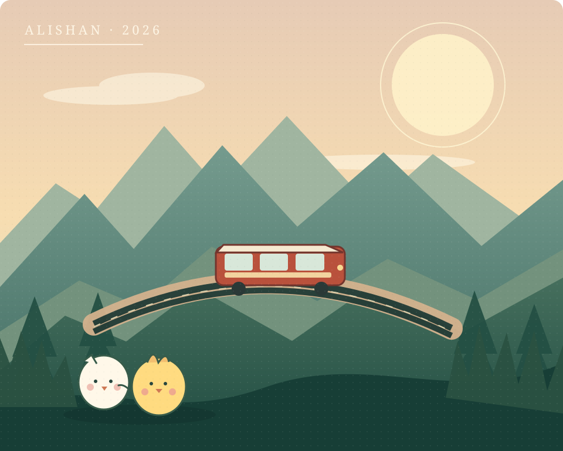

673911/30 週一・預定
員林客運｜日月潭 → 阿里山
上東埔站12:08
→阿里山轉運站12:40
從鹿林天文台步行下山至東埔停車場附近，務必核對「上東埔」正式站牌的位置與乘車預約規則。
2026 冬の特別企劃
星降る夜、森を歩いて、君と帰ろう。
從鹿林的星空出發，搭上紅色森林鐵道，再沿著眠月線，走進只有我們知道的風景。

旅のしおり / THE JOURNEY
一場考試後的出走，一個午後的森林約會，和一條等待已久的眠月線。
01 / 旅程時刻表 · ITINERARY
點選日期切換每天的行程。時間是旅行規劃，列車與公車請在出發前再確認。
03 / 森林散策 · FOREST WALK
11/30 不趕景點。從高山青大飯店出發，先坐一段森林小火車，再去看湖水和大樹。最晚 18:00 返回飯店，留足準備 19:00 家教的時間。
04 / 旅の準備 · PACKING LIST
勾選後會記在這支手機的瀏覽器裡，重新打開也會保留。出發前一起檢查吧。
山上保暖與眠月線準備
12/01 預計 07:00 起登、11:30 前到石猴。若去程需 4.5 小時，回程可能也接近 4.5 小時；再加上領行李與前往轉運站，16:40 公車非常緊。
務必按當天的路況、天氣和體力設定安全折返時間；如無法兼顧安全與回程交通，應調整石猴目標或返程方式。勿為趕車加速通過危險路段。
17:30 目標回飯店，18:00 最後緩衝，晚間 19:00 家教。到飯店先確認 Wi-Fi 與手機熱點，備妥充電器。
05 / 旅行資料室 · OFFICIAL LINKS
只連到官方時刻、訂票、旅館與景點資訊；點擊即在新分頁開啟。
一期一会